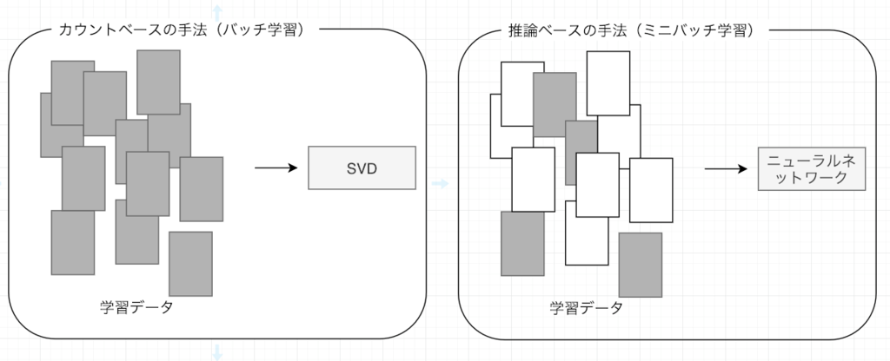
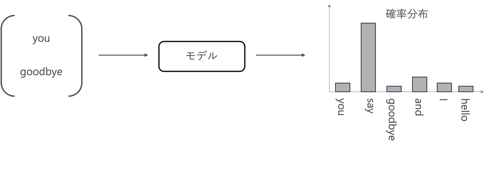
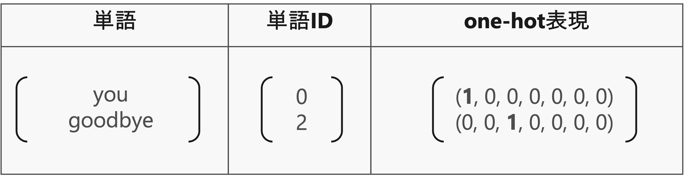
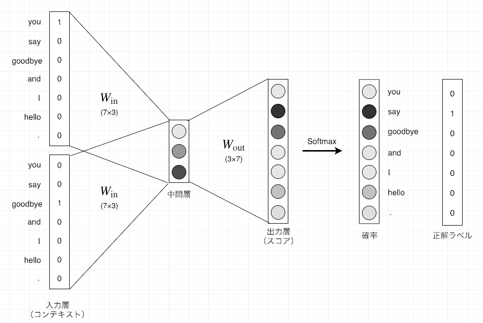

word2vec
Contents
word2vec#
前章では、「カウントベースの手法」によって単語分散表現を得ました。具体的には、単語の共起行列を作り、その行列に対してSVDを適用することで、密なベクトくー 単語分散表現ーを獲得したのです。
しかし、カウントベースの手法にはいくつかの問題点があります。
大規模なコーパスを扱う場合、巨大な共起行列に対してSVDを計算することが難しい。
コーパスの全体から一回の学習で単語分散表現を獲得していますので、新しい単語が追加される場合、再度最初から学習を行う必要があり、単語分散表現更新の効率が低い。
「カウントベースの手法」に代わる強力な手法として「推論ベース」の手法が挙げられます。特に、Mikolov et al. [Mikolov et al., 2013] [Mikolov et al., 2013] によって提案されたword2vecの有用性が多くの自然言語処理タスクにおいて示されてきたのです。
本章では、word2vecの仕組みについて説明し、それを実装することで理解を深めます。
推論ベース手法とニューラルネットワーク#
推論ベースの手法は、ミニバッチで学習する形で、ニューラルネットワークを用いて、重みを繰り返し更新することで単語分散表現を獲得します。

推論ベース手法の設計#
推論ベース手法では、you 【？】 goodbye and I say hello .のような、周囲の単語が与えられたときに、【？】にどのような単語が出現するのかを推測する推論問題を繰り返し解くことで、単語の出現バターンを学習します。
つまり、コンテキスト情報を入力として受け取り、各単語の出現する確率を出力する「モデル」を作成することは目標になります。ここで、正しい推測ができるように、コーパスを使って、ニューラルネットワークモデルの学習を行います。そして、その学習の結果として、単語の分散表現を得られます。

one-hot表現#
ニューラルネットワークで単語を処理するには、それを「固定長のベクトル」に変換する必要があります。
そのための方法の一つは、単語をone-hot表現へと変換することです。one-hot表現とは、ベクトルの要素の中で一つだけが\(1\)で、残りは全て\(0\)であるようなベクトルと言います。
単語をone-hot表現に変換するには、語彙数分の要素を持つベクトルを用意して、単語IDの該当する箇所を\(1\)に、残りは全て\(0\)に設定します。

CBOW（continuous bag-of-words）モデル#
CBOWモデルは、コンテキストからターゲットを推測することを目的としたニューラルネットワークです。このCBOWモデルで、できるだけ正確な推測ができるように訓練することで、単語の分散表現を取得することができます。
ここで、例として、コンテキスト["you","goodbye"]からターゲット"say"を予測するタスクを考えます。

入力層から中間層(エンコード)#
one-hotエンコーディングで、単語を固定長のベクトルに変換するすることができます。
単語をベクトルで表すことができれば、そのベクトルはニューラルネットワークを構成する「レイヤ」によって処理することができるようになりました。
コンテキストを\(\mathbf{c}\)、重みを\(\mathbf{W}\)とし、それぞれ次の形状とします。
コンテキストの要素数(列数)と重みの行数が、単語の種類数に対応します。
コンテキスト(単語)はone-hot表現として扱うため、例えば「you」の場合は
とすることで、単語「you」を表現できます。
重み付き和\(\mathbf{h}\)は、行列の積で求められます。
\(h_1\)の計算を詳しく見ると、次のようになります。
コンテキストと重みの対応する(同じ単語に関する)要素を掛けて、全ての単語で和をとります。しかしコンテキストは、\(c_{you}\)以外の要素が\(0\)なので、対応する重みの値の影響は消えていまします。また\(c_{you}\)は\(1\)なので、対応する重みの値\(w_{\mathrm{you},1}\)がそのまま中間層のニューロンに伝播します。
残りの2つの要素も同様に計算できるので、重み付き和
は、単語「you」に関する重みの値となります。
import numpy as np
# 適当にコンテキスト(one-hot表現)を指定
c = np.array([[1, 0, 0, 0, 0, 0, 0]])
print(f"コンテキストの形状：{c.shape}")
# 重みをランダムに生成
W = np.random.randn(7, 3)
print(f"重み\n{W}")
# 重み付き和を計算
h = np.dot(c, W)
print(f"重み付き和\n{h}")
print(f"重み付き和の形状：{h.shape}")
コンテキストの形状：(1, 7)
重み
[[ 1.07743703 -0.71971398 -0.23995761]
[-0.67265438 0.88897984 -0.56070438]
[ 1.32067666 0.92163261 -0.43098479]
[-0.3992787 0.59588145 -2.01327272]
[-0.85563832 1.01227494 0.27341657]
[-0.41680643 0.49121674 1.8630232 ]
[ 0.9161679 -0.69020892 1.94705313]]
重み付き和
[[ 1.07743703 -0.71971398 -0.23995761]]
重み付き和の形状：(1, 3)
コンテキストに複数な単語がある場合、入力層も複数になります。このとき、中間層にあるニューロンは、各入力層の全結合による変換後の値が平均されたものになります。
中間層のニューロンの数を入力層よりも減らすことによって、中間層には、単語を予測するために必要な情報が”コンパクト”に収められて、結果としては密なベクトル表現が得られます。このとき、この中間層の情報は、人間には理解できない「ブラックボックス」ような状態になります。この作業は、「エンコード」と言います。
中間層から出力層(デコード)#
中間層の情報から目的の結果を得る作業は、「デコード」と言います。ここでは、中間層のニューロンの値\(\mathbf{h}\)を各単語に対応した値になるように、つまり要素(行)数が単語の種類数となるように再度変換したものを、CBOWモデルの出力とします。
出力層の重みを
とします。行数が中間層のニューロン数、列数が単語の種類数になります。
出力層も全結合層とすると、最終的な出力は
例えば、「you」に関する要素の計算は、
コンテキストに対応する入力層の重みの平均と「you」に関する出力の重みの積になります。
他の要素(単語)についても同様に計算できるので、最終的な出力は
となります。
ここで、出力層のニューロンは各単語に対応し、各単語の「スコア」と言います。
「スコア」の値が高ければ高いほど、それに対応する単語の出現確率も高くなり、ターゲットの単語であるとして採用します。そのため、スコアを求める処理を推論処理と言います。
import torch
import torch.nn as nn
import numpy as np
# Define the context data
c0 = torch.tensor([[1, 0, 0, 0, 0, 0, 0]], dtype=torch.float32) # you
c1 = torch.tensor([[0, 0, 1, 0, 0, 0, 0]], dtype=torch.float32) # goodbye
# Initialize weights randomly
W_in = torch.randn(7, 3, requires_grad=False) # Input layer weights
W_out = torch.randn(3, 7, requires_grad=False) # Output layer weights
# Define the layers using PyTorch's functional API
def in_layer(x, W):
return torch.matmul(x, W)
def out_layer(h, W):
return torch.matmul(h, W)
# Forward pass through the input layers
h0 = in_layer(c0, W_in) # you
h1 = in_layer(c1, W_in) # goodbye
h = 0.5 * (h0 + h1)
# Forward pass through the output layer (scores)
s = out_layer(h, W_out)
# Print the outputs
h0, h1, h, torch.round(s, decimals=3)
(tensor([[ 0.1871, 1.2773, -1.2301]]),
tensor([[-1.0647, 0.5579, -0.6667]]),
tensor([[-0.4388, 0.9176, -0.9484]]),
tensor([[ 0.2420, 0.1140, -1.3740, 0.5600, 1.3930, -0.7030, 0.3680]]))
正解は「say」として、Softmax関数によってスコアsを確率として扱えるように変換し、そして、正規化した値と教師ラベルを用いて損失を求めなさい。
正解は「say」の場合、教師ラベルは[0, 1, 0, 0, 0, 0, 0]になります。
word2vecの重みと分散表現#
与えられたコンテキストに対して単語を予測するときに、「良い重み」のネットワークがあれば、「確率」を表すニューロンにおいて、正解に対応するニューロンが高くなっていることが期待できます。そして、大規模コーパスを使って得られる単語の分散表現は、単語の意味や文法のルールにおいて、人間の直感と合致するケースが多く見られます。
word2vecモデルの学習で行うことが、正しい予測ができるように重みを調整することです。つまり、「コンテキストから出現単語」を予測するという偽タスクをニューラルネットで解いてきましたが、目的はニューラルネットの重みを求めることになります。
もっと具体的に言えば、word2vecで使用されるネットワークには二つの重みがあります。それは、入力層の重み\(\mathbf{W_{in}}\)と、出力層の重み\(\mathbf{W_{out}}\)です。それでは、どちらの重みを使えば良いでしょうか？
入力側の重みを利用する
出力側の重みを利用する
二つの重みの両方を利用する
Word2Vecモデルに関しては、多くの研究や応用例で、入力層の重みを単語のベクトル表現として使用さており、良好なパフォーマンスを示しています。
Word2Vecモデルの実装#
学習データの準備#
コンテキストとターゲット#
Word2Vecモデルためのニューラルネットワークでは、「コンテキスト」を入力した時に、「ターゲット」が出現する確率を高くになるように学習を行います。
そのため、コーパスから「コンテキスト」と「ターゲット」が対応するデータを作成する必要があります。
# 前処理関数の実装
def preprocess(text):
# 前処理
text = text.lower() # 小文字に変換
text = text.replace('.', ' .') # ピリオドの前にスペースを挿入
words = text.split(' ') # 単語ごとに分割
# ディクショナリを初期化
word_to_id = {}
id_to_word = {}
# 未収録の単語をディクショナリに格納
for word in words:
if word not in word_to_id: # 未収録の単語のとき
# 次の単語のidを取得
new_id = len(word_to_id)
# 単語をキーとして単語IDを格納
word_to_id[word] = new_id
# 単語IDをキーとして単語を格納
id_to_word[new_id] = word
# 単語IDリストを作成
corpus = [word_to_id[w] for w in words]
return corpus, word_to_id, id_to_word
# テキストを設定
text = 'You say goodbye and I say hello.'
# 前処理
corpus, word_to_id, id_to_word = preprocess(text)
print(word_to_id)
print(id_to_word)
print(corpus)
{'you': 0, 'say': 1, 'goodbye': 2, 'and': 3, 'i': 4, 'hello': 5, '.': 6}
{0: 'you', 1: 'say', 2: 'goodbye', 3: 'and', 4: 'i', 5: 'hello', 6: '.'}
[0, 1, 2, 3, 4, 1, 5, 6]
テキストの単語を単語IDに変換したcorpusからターゲットを抽出します。
ターゲットはコンテキストの中央の単語なので、corpusの始めと終わりのウインドウサイズ分の単語は含めません。
# ウインドウサイズを指定
window_size = 1
# ターゲットを抽出
target = corpus[window_size:-window_size]
print(target)
[1, 2, 3, 4, 1, 5]
ターゲットの単語に対して、for文で前後ウィンドウサイズの範囲の単語を順番に抽出しcsに格納します。
つまりウィンドウサイズを\(1\)とすると、corpusにおけるターゲットのインデックスidxに対して、1つ前(idx - window_size)から1つ後(idx + window_size)までの範囲の単語を順番にcs格納します。ただしターゲット自体の単語はコンテキストに含めません。
# コンテキストを初期化(受け皿を作成)
contexts = []
# 1つ目のターゲットのインデックス
idx = window_size
# 1つ目のターゲットのコンテキストを初期化(受け皿を作成)
cs = []
# 1つ目のターゲットのコンテキストを1単語ずつ格納
for t in range(-window_size, window_size + 1):
# tがターゲットのインデックスのとき処理しない
if t == 0:
continue
# コンテキストを格納
cs.append(corpus[idx + t])
print(cs)
# 1つ目のターゲットのコンテキストを格納
contexts.append(cs)
print(contexts)
[0]
[0, 2]
[[0, 2]]
# コンテキストとターゲットの作成関数の実装
def create_contexts_target(corpus, window_size=1):
# ターゲットを抽出
target = corpus[window_size:-window_size]
# コンテキストを初期化
contexts = []
# ターゲットごとにコンテキストを格納
for idx in range(window_size, len(corpus) - window_size):
# 現在のターゲットのコンテキストを初期化
cs = []
# 現在のターゲットのコンテキストを1単語ずつ格納
for t in range(-window_size, window_size + 1):
# 0番目の要素はターゲットそのものなので処理を省略
if t == 0:
continue
# コンテキストを格納
cs.append(corpus[idx + t])
# 現在のターゲットのコンテキストのセットを格納
contexts.append(cs)
# NumPy配列に変換
return np.array(contexts), np.array(target)
# コンテキストとターゲットを作成
contexts, targets = create_contexts_target(corpus, window_size=1)
print(contexts)
print(targets)
[[0 2]
[1 3]
[2 4]
[3 1]
[4 5]
[1 6]]
[1 2 3 4 1 5]
PytorchでCBOWモデルの実装#
import numpy as np
import torch
import torch.optim as optim
import torch.nn as nn
import torch.nn.functional as F
from torch.utils.data import DataLoader, Dataset
device = torch.device('cuda' if torch.cuda.is_available() else 'cpu')
Embeddingレイヤ#
先ほど、理解しやすいone-hot表現でコンテキストを変換する方法を説明しましたが、大規模なコーパスで学習する際、one-hot表現の次元数も大きくになって、非効率な学習の原因になります。
ただ、one-hot表現による計算は、単に行列の特定の行を抜き出すことだけですから、同じ機能を持つレイヤで入れ替えることは可能です。このような、重みパラメータから「単語IDに該当する行(ベクトル)」を抜き出すためのレイヤは「Embeddingレイヤ」と言います。
PyTorchで提供されるモジュールnn.Embeddingを使うと、簡単にEmbeddingレイヤを実装することができます。
例えば、語彙に6つの単語があり、各埋め込みベクトルの次元数を3に設定した場合、nn.Embeddingの定義は以下のようになります。
そして、
embedding_layer = nn.Embedding(6, 3)
もしインデックス2のトークンの埋め込みを取得したい場合、次のようにします：
inputs = torch.tensor([[1,2]], dtype=torch.long)
embedding = embedding_layer(inputs)
embedding
tensor([[[ 0.1928, 0.9129, 0.6183],
[ 2.2841, 0.9754, -0.3763]]], grad_fn=<EmbeddingBackward0>)
埋め込みベクトルの和を取って、入力層から中間層までにエンコードの機能を実装できます。
out=torch.sum(embedding, dim=1)
out
tensor([[2.4769, 1.8883, 0.2420]], grad_fn=<SumBackward1>)
linear1 = nn.Linear(3, 6)
F.log_softmax(linear1(out), dim=1)
tensor([[-4.9358, -2.1282, -0.6659, -1.4140, -2.2187, -4.8217]],
grad_fn=<LogSoftmaxBackward0>)
ミニバッチ化データセットの作成#
Word2Vecも含めて、深層学習によって学習を行う際には、ミニバッチ化して学習させることが一般的です。
pytorchで提供されているDataSetとDataLoaderという機能を用いてミニバッチ化を簡単に実現できます。
DataSet#
DataSetは，元々のデータを全て持っていて、ある番号を指定されると、その番号の入出力のペアをただ一つ返します。クラスを使って実装します。
DataSetを実装する際には、クラスのメンバ関数として__len__()と__getitem__()を必ず作ります．
__len__()は、len()を使ったときに呼ばれる関数です。__getitem__()は、array[i]のようにインデックスを使って要素を参照するときに呼ばれる関数です。
class CBOWDataset(Dataset):
def __init__(self, contexts, targets):
self.contexts = contexts
self.targets = targets
def __len__(self):
return len(self.targets)
def __getitem__(self, idx):
return self.contexts[idx], self.targets[idx]
# Convert contexts and targets to tensors
contexts_tensor = torch.tensor(contexts, dtype=torch.long).to(device)
targets_tensor = torch.tensor(targets, dtype=torch.long).to(device)
# Create the dataset
dataset = CBOWDataset(contexts_tensor, targets_tensor)
print('全データ数:',len(dataset))
print('4番目のデータ:',dataset[3])
print('4~5番目のデータ:',dataset[3:5])
全データ数: 6
4番目のデータ: (tensor([3, 1]), tensor(4))
4~5番目のデータ: (tensor([[3, 1],
[4, 5]]), tensor([4, 1]))
DataLoader#
torch.utils.dataモジュールには、データのシャッフとミニバッチの整形に役立つDataLoaderというクラスが用意されます。
# Create the DataLoader
batch_size = 2 # You can adjust the batch size
data_loader = DataLoader(dataset, batch_size=batch_size, shuffle=True)
for data in data_loader:
print(data)
[tensor([[1, 3],
[4, 5]]), tensor([2, 1])]
[tensor([[0, 2],
[3, 1]]), tensor([1, 4])]
[tensor([[1, 6],
[2, 4]]), tensor([5, 3])]
CBOWモデルの構築#
import numpy as np
import torch
import torch.optim as optim
import torch.nn as nn
import torch.nn.functional as F
from torch.utils.data import DataLoader, Dataset
self.embeddings = nn.Embedding(vocab_size, embedding_size): 語彙の各単語に対してembedding_size次元のベクトルを割り当てる埋め込み層を作成します。self.linear1 = nn.Linear(embedding_size, vocab_size): 埋め込みベクトルを受け取り、語彙のサイズに対応する出力を生成します。embeds = self.embeddings(inputs):入力された単語のインデックスに基づいて、埋め込み層から対応するベクトルを取得します。
class SimpleCBOW(nn.Module):
def __init__(self, vocab_size, embedding_size):
super(SimpleCBOW, self).__init__()
self.embeddings = nn.Embedding(vocab_size, embedding_size)
self.linear1 = nn.Linear(embedding_size, vocab_size)
def forward(self, inputs):
embeds = self.embeddings(inputs)
out = torch.sum(embeds, dim=1)
out = self.linear1(out)
log_probs = F.log_softmax(out, dim=1)
return log_probs
# パラメータの設定
embedding_size = 10
learning_rate = 0.01
epochs = 500
vocab_size = len(word_to_id)
# モデルのインスタンス化
model = SimpleCBOW(vocab_size, embedding_size).to(device)
loss_function = nn.CrossEntropyLoss()
optimizer = optim.SGD(model.parameters(), lr=learning_rate)
# Training loop with batch processing
for epoch in range(epochs):
total_loss = 0
for i, (context_batch, target_batch) in enumerate(data_loader):
# Zero out the gradients from the last step
model.zero_grad()
# Forward pass through the model
log_probs = model(context_batch)
# Compute the loss
loss = loss_function(log_probs, target_batch)
# Backward pass to compute gradients
loss.backward()
# Update the model parameters
optimizer.step()
# Accumulate the loss
total_loss += loss.item()
# Log the total loss for the epoch
print(f'Epoch {epoch}, Total loss: {total_loss}')
Epoch 0, Total loss: 5.700774550437927
Epoch 1, Total loss: 5.494105339050293
Epoch 2, Total loss: 5.270676016807556
Epoch 3, Total loss: 5.121859550476074
Epoch 4, Total loss: 4.954053044319153
Epoch 5, Total loss: 4.7956143617630005
Epoch 6, Total loss: 4.618826866149902
Epoch 7, Total loss: 4.519305109977722
Epoch 8, Total loss: 4.392955541610718
Epoch 9, Total loss: 4.27374792098999
Epoch 10, Total loss: 4.123714447021484
Epoch 11, Total loss: 4.0397117137908936
Epoch 12, Total loss: 3.9602309465408325
Epoch 13, Total loss: 3.847998261451721
Epoch 14, Total loss: 3.7803478240966797
Epoch 15, Total loss: 3.6969350576400757
Epoch 16, Total loss: 3.577926993370056
Epoch 17, Total loss: 3.5274760723114014
Epoch 18, Total loss: 3.477741837501526
Epoch 19, Total loss: 3.3675010204315186
Epoch 20, Total loss: 3.3211464881896973
Epoch 21, Total loss: 3.244232177734375
Epoch 22, Total loss: 3.2108543515205383
Epoch 23, Total loss: 3.177510976791382
Epoch 24, Total loss: 3.1045060753822327
Epoch 25, Total loss: 3.0739171504974365
Epoch 26, Total loss: 3.0087565183639526
Epoch 27, Total loss: 2.9623445868492126
Epoch 28, Total loss: 2.920374095439911
Epoch 29, Total loss: 2.8971187472343445
Epoch 30, Total loss: 2.837131977081299
Epoch 31, Total loss: 2.7997875213623047
Epoch 32, Total loss: 2.778563618659973
Epoch 33, Total loss: 2.726812481880188
Epoch 34, Total loss: 2.690895676612854
Epoch 35, Total loss: 2.6778297424316406
Epoch 36, Total loss: 2.626853823661804
Epoch 37, Total loss: 2.5946337580680847
Epoch 38, Total loss: 2.536981165409088
Epoch 39, Total loss: 2.5552059412002563
Epoch 40, Total loss: 2.5269135236740112
Epoch 41, Total loss: 2.499473810195923
Epoch 42, Total loss: 2.4715631008148193
Epoch 43, Total loss: 2.447175145149231
Epoch 44, Total loss: 2.4194993376731873
Epoch 45, Total loss: 2.353058695793152
Epoch 46, Total loss: 2.373390018939972
Epoch 47, Total loss: 2.306534767150879
Epoch 48, Total loss: 2.2993149757385254
Epoch 49, Total loss: 2.304762303829193
Epoch 50, Total loss: 2.2838884592056274
Epoch 51, Total loss: 2.247039794921875
Epoch 52, Total loss: 2.243970036506653
Epoch 53, Total loss: 2.2085702419281006
Epoch 54, Total loss: 2.2037134766578674
Epoch 55, Total loss: 2.1434693336486816
Epoch 56, Total loss: 2.167467474937439
Epoch 57, Total loss: 2.149615705013275
Epoch 58, Total loss: 2.090006470680237
Epoch 59, Total loss: 2.114958107471466
Epoch 60, Total loss: 2.0982373356819153
Epoch 61, Total loss: 2.053457200527191
Epoch 62, Total loss: 2.05063796043396
Epoch 63, Total loss: 2.006709039211273
Epoch 64, Total loss: 2.0353736877441406
Epoch 65, Total loss: 2.019989013671875
Epoch 66, Total loss: 2.0046895146369934
Epoch 67, Total loss: 1.9763718843460083
Epoch 68, Total loss: 1.9768741130828857
Epoch 69, Total loss: 1.9622947573661804
Epoch 70, Total loss: 1.9348608255386353
Epoch 71, Total loss: 1.9356588125228882
Epoch 72, Total loss: 1.9211459755897522
Epoch 73, Total loss: 1.909319907426834
Epoch 74, Total loss: 1.8961373269557953
Epoch 75, Total loss: 1.8829232454299927
Epoch 76, Total loss: 1.858546257019043
Epoch 77, Total loss: 1.8584778904914856
Epoch 78, Total loss: 1.8473684787750244
Epoch 79, Total loss: 1.7941648960113525
Epoch 80, Total loss: 1.811498999595642
Epoch 81, Total loss: 1.8003636598587036
Epoch 82, Total loss: 1.8024345934391022
Epoch 83, Total loss: 1.7903858721256256
Epoch 84, Total loss: 1.7807230353355408
Epoch 85, Total loss: 1.7579165697097778
Epoch 86, Total loss: 1.7589809894561768
Epoch 87, Total loss: 1.7486557960510254
Epoch 88, Total loss: 1.7381951808929443
Epoch 89, Total loss: 1.7170886099338531
Epoch 90, Total loss: 1.7195576429367065
Epoch 91, Total loss: 1.6705844402313232
Epoch 92, Total loss: 1.7003824412822723
Epoch 93, Total loss: 1.6902962028980255
Epoch 94, Total loss: 1.6705875992774963
Epoch 95, Total loss: 1.671998381614685
Epoch 96, Total loss: 1.6237103343009949
Epoch 97, Total loss: 1.654004454612732
Epoch 98, Total loss: 1.635513186454773
Epoch 99, Total loss: 1.5979633629322052
Epoch 100, Total loss: 1.62852942943573
Epoch 101, Total loss: 1.6201559901237488
Epoch 102, Total loss: 1.5732300877571106
Epoch 103, Total loss: 1.5944339036941528
Epoch 104, Total loss: 1.5863589644432068
Epoch 105, Total loss: 1.5879442989826202
Epoch 106, Total loss: 1.5799223184585571
Epoch 107, Total loss: 1.5720337629318237
Epoch 108, Total loss: 1.5645372569561005
Epoch 109, Total loss: 1.5569401681423187
Epoch 110, Total loss: 1.5497909188270569
Epoch 111, Total loss: 1.5422040820121765
Epoch 112, Total loss: 1.5266910791397095
Epoch 113, Total loss: 1.519747257232666
Epoch 114, Total loss: 1.5212037563323975
Epoch 115, Total loss: 1.50556218624115
Epoch 116, Total loss: 1.4709044694900513
Epoch 117, Total loss: 1.50069460272789
Epoch 118, Total loss: 1.4568816125392914
Epoch 119, Total loss: 1.4871345162391663
Epoch 120, Total loss: 1.4811909198760986
Epoch 121, Total loss: 1.4744677245616913
Epoch 122, Total loss: 1.4682974219322205
Epoch 123, Total loss: 1.4617651998996735
Epoch 124, Total loss: 1.455709546804428
Epoch 125, Total loss: 1.4418198764324188
Epoch 126, Total loss: 1.443264901638031
Epoch 127, Total loss: 1.4299259185791016
Epoch 128, Total loss: 1.4242430627346039
Epoch 129, Total loss: 1.4255915582180023
Epoch 130, Total loss: 1.4195559620857239
Epoch 131, Total loss: 1.3787508308887482
Epoch 132, Total loss: 1.4014795422554016
Epoch 133, Total loss: 1.395829051733017
Epoch 134, Total loss: 1.390586405992508
Epoch 135, Total loss: 1.3852711915969849
Epoch 136, Total loss: 1.3799888491630554
Epoch 137, Total loss: 1.3811061084270477
Epoch 138, Total loss: 1.37608203291893
Epoch 139, Total loss: 1.3706302046775818
Epoch 140, Total loss: 1.366019368171692
Epoch 141, Total loss: 1.3543543219566345
Epoch 142, Total loss: 1.3269905745983124
Epoch 143, Total loss: 1.3505645990371704
Epoch 144, Total loss: 1.3395642638206482
Epoch 145, Total loss: 1.3411909341812134
Epoch 146, Total loss: 1.3361802846193314
Epoch 147, Total loss: 1.3313190340995789
Epoch 148, Total loss: 1.326783761382103
Epoch 149, Total loss: 1.3219296485185623
Epoch 150, Total loss: 1.3175831139087677
Epoch 151, Total loss: 1.2841054052114487
Epoch 152, Total loss: 1.30799899995327
Epoch 153, Total loss: 1.2982409000396729
Epoch 154, Total loss: 1.2938830852508545
Epoch 155, Total loss: 1.2896161675453186
Epoch 156, Total loss: 1.29083850979805
Epoch 157, Total loss: 1.2578048706054688
Epoch 158, Total loss: 1.2537071257829666
Epoch 159, Total loss: 1.2779672890901566
Epoch 160, Total loss: 1.2452225089073181
Epoch 161, Total loss: 1.26991306245327
Epoch 162, Total loss: 1.2657174915075302
Epoch 163, Total loss: 1.2567544281482697
Epoch 164, Total loss: 1.2528689503669739
Epoch 165, Total loss: 1.2540358901023865
Epoch 166, Total loss: 1.2501450777053833
Epoch 167, Total loss: 1.24616377055645
Epoch 168, Total loss: 1.2425513565540314
Epoch 169, Total loss: 1.2387157380580902
Epoch 170, Total loss: 1.2347170114517212
Epoch 171, Total loss: 1.2313880920410156
Epoch 172, Total loss: 1.194137692451477
Epoch 173, Total loss: 1.219508022069931
Epoch 174, Total loss: 1.2204083800315857
Epoch 175, Total loss: 1.2170077562332153
Epoch 176, Total loss: 1.2091681957244873
Epoch 177, Total loss: 1.2099262923002243
Epoch 178, Total loss: 1.2023169696331024
Epoch 179, Total loss: 1.1744617968797684
Epoch 180, Total loss: 1.1998986601829529
Epoch 181, Total loss: 1.16347336769104
Epoch 182, Total loss: 1.1934374868869781
Epoch 183, Total loss: 1.18597811460495
Epoch 184, Total loss: 1.1869719326496124
Epoch 185, Total loss: 1.1836795210838318
Epoch 186, Total loss: 1.1806119233369827
Epoch 187, Total loss: 1.1773921847343445
Epoch 188, Total loss: 1.1741840243339539
Epoch 189, Total loss: 1.1711000800132751
Epoch 190, Total loss: 1.1644919514656067
Epoch 191, Total loss: 1.1652082055807114
Epoch 192, Total loss: 1.1623094081878662
Epoch 193, Total loss: 1.1591646671295166
Epoch 194, Total loss: 1.1240963637828827
Epoch 195, Total loss: 1.1534988433122635
Epoch 196, Total loss: 1.1505490243434906
Epoch 197, Total loss: 1.1478185802698135
Epoch 198, Total loss: 1.1449348330497742
Epoch 199, Total loss: 1.1389242261648178
Epoch 200, Total loss: 1.1362023651599884
Epoch 201, Total loss: 1.1334225535392761
Epoch 202, Total loss: 1.1342073529958725
Epoch 203, Total loss: 1.1314457803964615
Epoch 204, Total loss: 1.0965395122766495
Epoch 205, Total loss: 1.1262402832508087
Epoch 206, Total loss: 1.1236425936222076
Epoch 207, Total loss: 1.121096909046173
Epoch 208, Total loss: 1.1185581982135773
Epoch 209, Total loss: 1.1129853576421738
Epoch 210, Total loss: 1.0846209973096848
Epoch 211, Total loss: 1.1110698729753494
Epoch 212, Total loss: 1.10855633020401
Epoch 213, Total loss: 1.1059525310993195
Epoch 214, Total loss: 1.071759670972824
Epoch 215, Total loss: 1.0984304398298264
Epoch 216, Total loss: 1.0671035945415497
Epoch 217, Total loss: 1.0965207517147064
Epoch 218, Total loss: 1.0944417864084244
Epoch 219, Total loss: 1.0605082586407661
Epoch 220, Total loss: 1.089756429195404
Epoch 221, Total loss: 1.0848810523748398
Epoch 222, Total loss: 1.082768201828003
Epoch 223, Total loss: 1.0830942392349243
Epoch 224, Total loss: 1.0809417963027954
Epoch 225, Total loss: 1.0787060856819153
Epoch 226, Total loss: 1.0765210390090942
Epoch 227, Total loss: 1.0744702517986298
Epoch 228, Total loss: 1.0722791701555252
Epoch 229, Total loss: 1.0678327679634094
Epoch 230, Total loss: 1.06574285030365
Epoch 231, Total loss: 1.066254049539566
Epoch 232, Total loss: 1.0640778839588165
Epoch 233, Total loss: 1.0620350241661072
Epoch 234, Total loss: 1.0601181089878082
Epoch 235, Total loss: 1.026937834918499
Epoch 236, Total loss: 1.0560793578624725
Epoch 237, Total loss: 1.0543371587991714
Epoch 238, Total loss: 1.0524048805236816
Epoch 239, Total loss: 1.050497978925705
Epoch 240, Total loss: 1.0195615589618683
Epoch 241, Total loss: 1.046544834971428
Epoch 242, Total loss: 1.0448164194822311
Epoch 243, Total loss: 1.042778193950653
Epoch 244, Total loss: 1.0411141514778137
Epoch 245, Total loss: 1.0392980054020882
Epoch 246, Total loss: 1.0353525429964066
Epoch 247, Total loss: 1.0066936016082764
Epoch 248, Total loss: 1.0048842132091522
Epoch 249, Total loss: 1.030164897441864
Epoch 250, Total loss: 1.0304804295301437
Epoch 251, Total loss: 1.0287666991353035
Epoch 252, Total loss: 1.0250898599624634
Epoch 253, Total loss: 1.0253567099571228
Epoch 254, Total loss: 1.0236549079418182
Epoch 255, Total loss: 0.9909296631813049
Epoch 256, Total loss: 0.9913269430398941
Epoch 257, Total loss: 1.0186649858951569
Epoch 258, Total loss: 0.9860873892903328
Epoch 259, Total loss: 1.0154737532138824
Epoch 260, Total loss: 0.9829065948724747
Epoch 261, Total loss: 1.012370765209198
Epoch 262, Total loss: 1.0107244104146957
Epoch 263, Total loss: 1.0074424743652344
Epoch 264, Total loss: 1.007735788822174
Epoch 265, Total loss: 1.0043960064649582
Epoch 266, Total loss: 0.9737309962511063
Epoch 267, Total loss: 1.0031447932124138
Epoch 268, Total loss: 1.001635529100895
Epoch 269, Total loss: 0.9984835684299469
Epoch 270, Total loss: 0.9678649231791496
Epoch 271, Total loss: 0.9971997737884521
Epoch 272, Total loss: 0.9957576990127563
Epoch 273, Total loss: 0.9943734407424927
Epoch 274, Total loss: 0.9914033114910126
Epoch 275, Total loss: 0.9915643110871315
Epoch 276, Total loss: 0.9902133569121361
Epoch 277, Total loss: 0.9887360110878944
Epoch 278, Total loss: 0.9874550029635429
Epoch 279, Total loss: 0.9860934168100357
Epoch 280, Total loss: 0.9541256725788116
Epoch 281, Total loss: 0.9819017350673676
Epoch 282, Total loss: 0.9805662482976913
Epoch 283, Total loss: 0.980694092810154
Epoch 284, Total loss: 0.9793831706047058
Epoch 285, Total loss: 0.9766884744167328
Epoch 286, Total loss: 0.9463323950767517
Epoch 287, Total loss: 0.9741555601358414
Epoch 288, Total loss: 0.972957044839859
Epoch 289, Total loss: 0.9731058776378632
Epoch 290, Total loss: 0.9704372584819794
Epoch 291, Total loss: 0.9705552458763123
Epoch 292, Total loss: 0.9693443775177002
Epoch 293, Total loss: 0.9668440371751785
Epoch 294, Total loss: 0.9656101018190384
Epoch 295, Total loss: 0.9657126069068909
Epoch 296, Total loss: 0.9340311959385872
Epoch 297, Total loss: 0.96336230635643
Epoch 298, Total loss: 0.9622934758663177
Epoch 299, Total loss: 0.9611257612705231
Epoch 300, Total loss: 0.9599207565188408
Epoch 301, Total loss: 0.95878966152668
Epoch 302, Total loss: 0.9272866919636726
Epoch 303, Total loss: 0.9565589353442192
Epoch 304, Total loss: 0.9553811252117157
Epoch 305, Total loss: 0.9251181706786156
Epoch 306, Total loss: 0.9520038217306137
Epoch 307, Total loss: 0.9509293660521507
Epoch 308, Total loss: 0.9510618895292282
Epoch 309, Total loss: 0.9500212967395782
Epoch 310, Total loss: 0.9488902762532234
Epoch 311, Total loss: 0.9478856474161148
Epoch 312, Total loss: 0.946785531938076
Epoch 313, Total loss: 0.9446082338690758
Epoch 314, Total loss: 0.9446828365325928
Epoch 315, Total loss: 0.943652480840683
Epoch 316, Total loss: 0.9415605068206787
Epoch 317, Total loss: 0.9405722916126251
Epoch 318, Total loss: 0.9395584836602211
Epoch 319, Total loss: 0.9386183023452759
Epoch 320, Total loss: 0.9387141466140747
Epoch 321, Total loss: 0.9366463273763657
Epoch 322, Total loss: 0.9367222785949707
Epoch 323, Total loss: 0.9347227364778519
Epoch 324, Total loss: 0.9347802996635437
Epoch 325, Total loss: 0.9328364580869675
Epoch 326, Total loss: 0.9329044297337532
Epoch 327, Total loss: 0.9319319501519203
Epoch 328, Total loss: 0.9310430884361267
Epoch 329, Total loss: 0.9300446063280106
Epoch 330, Total loss: 0.9291207194328308
Epoch 331, Total loss: 0.8989966288208961
Epoch 332, Total loss: 0.9273452162742615
Epoch 333, Total loss: 0.8962364494800568
Epoch 334, Total loss: 0.9255397319793701
Epoch 335, Total loss: 0.9237203299999237
Epoch 336, Total loss: 0.9228484556078911
Epoch 337, Total loss: 0.9229133054614067
Epoch 338, Total loss: 0.9211114048957825
Epoch 339, Total loss: 0.9202954173088074
Epoch 340, Total loss: 0.9203828722238541
Epoch 341, Total loss: 0.9195286184549332
Epoch 342, Total loss: 0.8885359838604927
Epoch 343, Total loss: 0.9178252592682838
Epoch 344, Total loss: 0.9161191284656525
Epoch 345, Total loss: 0.9152956157922745
Epoch 346, Total loss: 0.9145227670669556
Epoch 347, Total loss: 0.9145486354827881
Epoch 348, Total loss: 0.9137406125664711
Epoch 349, Total loss: 0.9129293635487556
Epoch 350, Total loss: 0.9120711907744408
Epoch 351, Total loss: 0.9113037623465061
Epoch 352, Total loss: 0.9096875041723251
Epoch 353, Total loss: 0.9097097516059875
Epoch 354, Total loss: 0.908933624625206
Epoch 355, Total loss: 0.8780875578522682
Epoch 356, Total loss: 0.907395988702774
Epoch 357, Total loss: 0.9066045582294464
Epoch 358, Total loss: 0.905108705163002
Epoch 359, Total loss: 0.9043585881590843
Epoch 360, Total loss: 0.9044291824102402
Epoch 361, Total loss: 0.8735114559531212
Epoch 362, Total loss: 0.902924120426178
Epoch 363, Total loss: 0.9022202789783478
Epoch 364, Total loss: 0.9007082059979439
Epoch 365, Total loss: 0.9007357805967331
Epoch 366, Total loss: 0.8999958261847496
Epoch 367, Total loss: 0.869259350001812
Epoch 368, Total loss: 0.8684933334589005
Epoch 369, Total loss: 0.897182360291481
Epoch 370, Total loss: 0.8972148224711418
Epoch 371, Total loss: 0.8957984000444412
Epoch 372, Total loss: 0.8951331973075867
Epoch 373, Total loss: 0.8951195701956749
Epoch 374, Total loss: 0.8938036561012268
Epoch 375, Total loss: 0.8931342512369156
Epoch 376, Total loss: 0.8924961537122726
Epoch 377, Total loss: 0.8925185315310955
Epoch 378, Total loss: 0.8911314457654953
Epoch 379, Total loss: 0.8911782950162888
Epoch 380, Total loss: 0.889866441488266
Epoch 381, Total loss: 0.8598655238747597
Epoch 382, Total loss: 0.8598554953932762
Epoch 383, Total loss: 0.8885992206633091
Epoch 384, Total loss: 0.8872930556535721
Epoch 385, Total loss: 0.8873321041464806
Epoch 386, Total loss: 0.8573075644671917
Epoch 387, Total loss: 0.8566794469952583
Epoch 388, Total loss: 0.8854085803031921
Epoch 389, Total loss: 0.8547793552279472
Epoch 390, Total loss: 0.8548268005251884
Epoch 391, Total loss: 0.8836227655410767
Epoch 392, Total loss: 0.8529639840126038
Epoch 393, Total loss: 0.8524082079529762
Epoch 394, Total loss: 0.8518065959215164
Epoch 395, Total loss: 0.8811981491744518
Epoch 396, Total loss: 0.850588396191597
Epoch 397, Total loss: 0.8500469550490379
Epoch 398, Total loss: 0.8500315025448799
Epoch 399, Total loss: 0.878860168159008
Epoch 400, Total loss: 0.877703882753849
Epoch 401, Total loss: 0.8771518021821976
Epoch 402, Total loss: 0.8771440461277962
Epoch 403, Total loss: 0.8760271221399307
Epoch 404, Total loss: 0.8754801899194717
Epoch 405, Total loss: 0.8749489039182663
Epoch 406, Total loss: 0.8743745535612106
Epoch 407, Total loss: 0.8743235804140568
Epoch 408, Total loss: 0.8737742826342583
Epoch 409, Total loss: 0.8732790574431419
Epoch 410, Total loss: 0.8426979705691338
Epoch 411, Total loss: 0.8716304004192352
Epoch 412, Total loss: 0.8711220771074295
Epoch 413, Total loss: 0.8711406886577606
Epoch 414, Total loss: 0.8406032100319862
Epoch 415, Total loss: 0.8700471334159374
Epoch 416, Total loss: 0.8395337462425232
Epoch 417, Total loss: 0.8684952557086945
Epoch 418, Total loss: 0.8385007679462433
Epoch 419, Total loss: 0.8674852326512337
Epoch 420, Total loss: 0.8674579858779907
Epoch 421, Total loss: 0.8669782243669033
Epoch 422, Total loss: 0.865981362760067
Epoch 423, Total loss: 0.8659552708268166
Epoch 424, Total loss: 0.8654995188117027
Epoch 425, Total loss: 0.835526593029499
Epoch 426, Total loss: 0.8645078614354134
Epoch 427, Total loss: 0.8640263378620148
Epoch 428, Total loss: 0.8635396733880043
Epoch 429, Total loss: 0.8330593928694725
Epoch 430, Total loss: 0.8625821322202682
Epoch 431, Total loss: 0.8620942980051041
Epoch 432, Total loss: 0.8616049364209175
Epoch 433, Total loss: 0.8611306883394718
Epoch 434, Total loss: 0.8606806732714176
Epoch 435, Total loss: 0.8598035871982574
Epoch 436, Total loss: 0.8598303496837616
Epoch 437, Total loss: 0.8293910883367062
Epoch 438, Total loss: 0.8584016039967537
Epoch 439, Total loss: 0.8579494655132294
Epoch 440, Total loss: 0.8279768526554108
Epoch 441, Total loss: 0.8574963584542274
Epoch 442, Total loss: 0.8570463955402374
Epoch 443, Total loss: 0.856587328016758
Epoch 444, Total loss: 0.8561389930546284
Epoch 445, Total loss: 0.825763538479805
Epoch 446, Total loss: 0.8552624136209488
Epoch 447, Total loss: 0.8252896666526794
Epoch 448, Total loss: 0.8539446145296097
Epoch 449, Total loss: 0.8539509326219559
Epoch 450, Total loss: 0.8534888997673988
Epoch 451, Total loss: 0.8231399208307266
Epoch 452, Total loss: 0.8522230312228203
Epoch 453, Total loss: 0.8227042853832245
Epoch 454, Total loss: 0.8518065884709358
Epoch 455, Total loss: 0.851006343960762
Epoch 456, Total loss: 0.8510006852447987
Epoch 457, Total loss: 0.850589819252491
Epoch 458, Total loss: 0.8497513830661774
Epoch 459, Total loss: 0.8497461080551147
Epoch 460, Total loss: 0.849327877163887
Epoch 461, Total loss: 0.8190134726464748
Epoch 462, Total loss: 0.8485297374427319
Epoch 463, Total loss: 0.8182240575551987
Epoch 464, Total loss: 0.8477173559367657
Epoch 465, Total loss: 0.8469590917229652
Epoch 466, Total loss: 0.8469420894980431
Epoch 467, Total loss: 0.817030031234026
Epoch 468, Total loss: 0.8458128422498703
Epoch 469, Total loss: 0.8454219959676266
Epoch 470, Total loss: 0.8453770875930786
Epoch 471, Total loss: 0.8446392491459846
Epoch 472, Total loss: 0.8446030728518963
Epoch 473, Total loss: 0.8442609906196594
Epoch 474, Total loss: 0.8438595235347748
Epoch 475, Total loss: 0.8434768617153168
Epoch 476, Total loss: 0.8132271952927113
Epoch 477, Total loss: 0.8427666053175926
Epoch 478, Total loss: 0.8420588374137878
Epoch 479, Total loss: 0.8121530786156654
Epoch 480, Total loss: 0.8416836932301521
Epoch 481, Total loss: 0.840955525636673
Epoch 482, Total loss: 0.840914648026228
Epoch 483, Total loss: 0.8402402251958847
Epoch 484, Total loss: 0.8402340039610863
Epoch 485, Total loss: 0.8398900777101517
Epoch 486, Total loss: 0.8096055053174496
Epoch 487, Total loss: 0.8388410955667496
Epoch 488, Total loss: 0.8384934812784195
Epoch 489, Total loss: 0.8384545184671879
Epoch 490, Total loss: 0.8377925530076027
Epoch 491, Total loss: 0.8078872971236706
Epoch 492, Total loss: 0.8374360240995884
Epoch 493, Total loss: 0.8370950296521187
Epoch 494, Total loss: 0.8367444947361946
Epoch 495, Total loss: 0.8065392971038818
Epoch 496, Total loss: 0.8357750326395035
Epoch 497, Total loss: 0.8061614520847797
Epoch 498, Total loss: 0.8354159593582153
Epoch 499, Total loss: 0.8350708708167076
モデルの入力層の重みが単語分散表現であり、\(単語 \times 埋め込み次元数\)の形の行列になります。
model.embeddings.weight.shape
torch.Size([7, 10])
word_embeddings = model.embeddings.weight.data
# 各単語とそれに対応する分散表現を表示
for word, idx in word_to_id.items():
vector = word_embeddings[idx].cpu().numpy()
print(f"Word: {word}")
print(f"Vector: {vector}\n")
Word: you
Vector: [-0.3183512 1.9457438 1.3326782 -0.11564877 0.42641887 0.6657397
0.73126084 0.5459601 -0.499291 0.908137 ]
Word: say
Vector: [ 0.98518515 -0.02246292 0.3820192 1.0014919 0.45154807 0.66073054
-1.1958139 -1.2996927 0.3599932 0.4168387 ]
Word: goodbye
Vector: [-0.12738775 1.2310572 -0.5617192 -2.0404012 0.17972748 1.0920486
-0.00550904 0.1434774 -2.0818894 0.24645819]
Word: and
Vector: [-1.2929643 2.58048 -0.77966017 1.3984693 -0.2712588 -1.4459269
-0.68745995 0.04468812 1.1541681 0.165636 ]
Word: i
Vector: [-0.148664 0.20734023 -0.36478186 -2.2011533 0.7583953 -0.9202053
-1.8097018 -1.1134925 -0.0536291 0.7862387 ]
Word: hello
Vector: [ 0.42483613 -1.0925508 0.8715899 -0.49691647 -0.282757 -0.9558577
1.3769476 -1.0475968 -0.13895915 0.56675506]
Word: .
Vector: [-0.7479168 -2.2338755 2.168561 -1.325985 -0.06271207 -1.6683598
0.12994933 1.1012725 0.07859844 -1.2925698 ]